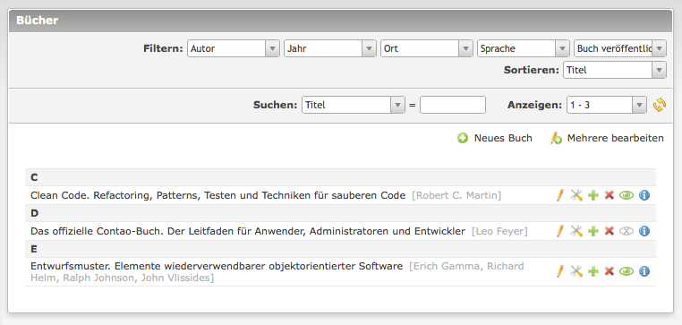
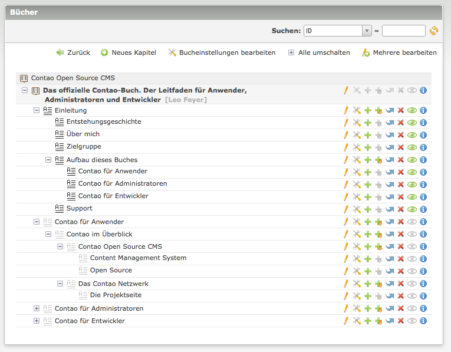

Books Extension für Contao
Contao bietet die Möglichkeit mit Hilfe des Moduls Buchnavigation innerhalb der Seitenstruktur wie durch ein Buch zu navigieren. Diese Erweiterung geht einen Schritt weiter und erlaubt es Bücher als eigenständigen Inhalt zu definieren. Ein Buch definiert Meta-Informationen wie Author und Sprache, und besitzt eine Kapitelhierarchie. Jedes dieser Bücher kann in Form eines Inhaltselements in Artikeln auf jeder Webseite einer Contao-Installation eingefügt werden (multidomainfähig).
Die Erweiterung kann über das Contao Extension Repository installiert werden.
Verwendung
Hinter dem neuen Menüpunkt Bücher unter Inhalte werden im Backend die Bücher verwaltet. Jedes Buch kann beliebig viele Kapitel und Unterkapitel enthalten. Der Inhalt der Kapitel wird wie bei Artikeln durch Inhaltselemente definiert.
Innerhalb eines Buches kann mit den folgenden Insertags zwischen den Kapiteln eines Buches verlinkt werden.
-
{{bookchapter::*}}Fügt einen Link zu einem Kapitel dieses Buches ein. Der Stern * muss durch die ID oder den Alias des Kapitels ersetzt werden. -
{{bookchapter_open::*}}Click here{{link_close}}Fügt einen Link zu einem anderen Kapitel dieses Buches ein. Der Stern * muss durch die ID oder den Alias des Kapitels ersetzt werden. -
{{bookchapter_url::*}}Fügt die URL zu einem Kapitel dieses Buches ein. Der Stern * muss durch die ID oder den Alias des Kapitels ersetzt werden. -
{{bookchapter_title::*}}Fügt den Titel eines Kapitels dieses Buches ein. Der Stern * muss durch die ID oder den Alias des Kapitels ersetzt werden.
Ansicht der Bücher als Liste

Ansicht der Kapitel eines Buches als Baum
